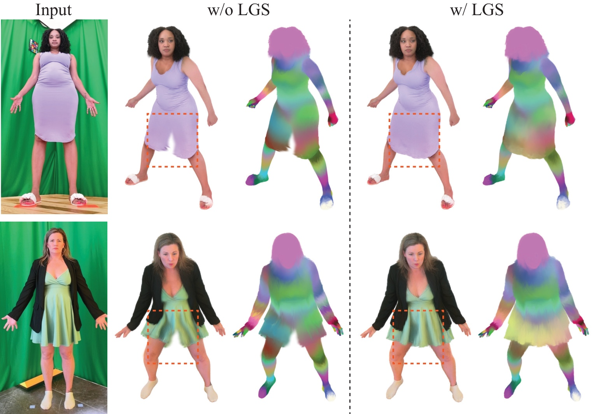

We present Large-Scale Codec Avatars (LCA), a high-fidelity, full-body 3D avatar model that generalizes to world-scale populations in a feedforward manner. For the first time, we introduce a pre/post-training paradigm for 3D avatar modeling at scale: pretraining on 1M in-the-wild videos to learn broad priors, then post-training on high-quality multi-view studio data for enhanced fidelity.
Key results: LCA generalizes across hair styles, clothing, and demographics with precise facial expressions and finger-level articulation. We observe emergent capabilities — relightability, loose garment support, and zero-shot robustness to stylized imagery.

Loose Garment Support. (Left) Frontal view of the input condition. (Middle) Post-trained LCA avatar without loose garment support — skirts behave like pants when moving. (Right) LCA with loose garment support produces plausible animations without splitting garments.
Relightable LCA. We demonstrate relighting under HDRI environment maps and point lights. LCA is conditioned only on unconstrained phone captures at test time.
@misc{li2026largescalecodecavatarsunreasonable,
title={Large-scale Codec Avatars: The Unreasonable Effectiveness of Large-scale Avatar Pretraining},
author={Junxuan Li and Rawal Khirodkar and Chengan He and Zhongshi Jiang and Giljoo Nam and Lingchen Yang and Jihyun Lee and Egor Zakharov and Zhaoen Su and Rinat Abdrashitov and Yuan Dong and Julieta Martinez and Kai Li and Qingyang Tan and Takaaki Shiratori and Matthew Hu and Peihong Guo and Xuhua Huang and Ariyan Zarei and Marco Pesavento and Yichen Xu and He Wen and Teng Deng and Wyatt Borsos and Anjali Thakrar and Jean-Charles Bazin and Carsten Stoll and Ginés Hidalgo and James Booth and Lucy Wang and Xiaowen Ma and Yu Rong and Sairanjith Thalanki and Chen Cao and Christian Häne and Abhishek Kar and Sofien Bouaziz and Jason Saragih and Yaser Sheikh and Shunsuke Saito},
year={2026},
eprint={2604.02320},
archivePrefix={arXiv},
primaryClass={cs.CV},
url={https://arxiv.org/abs/2604.02320},
}